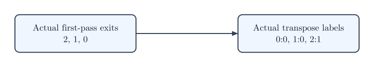
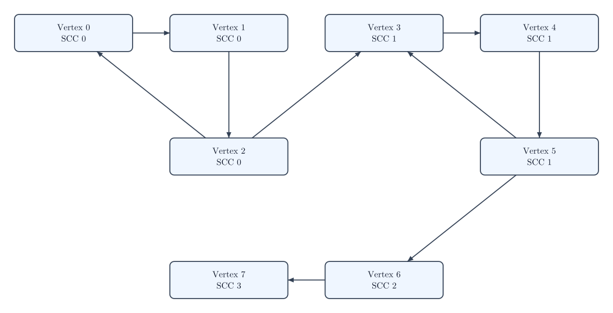
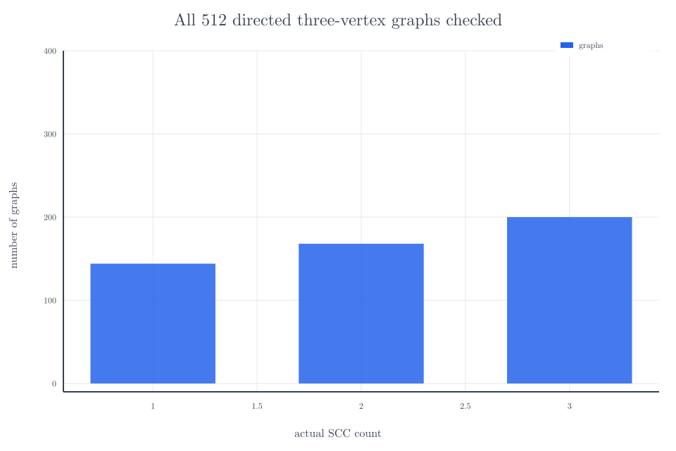
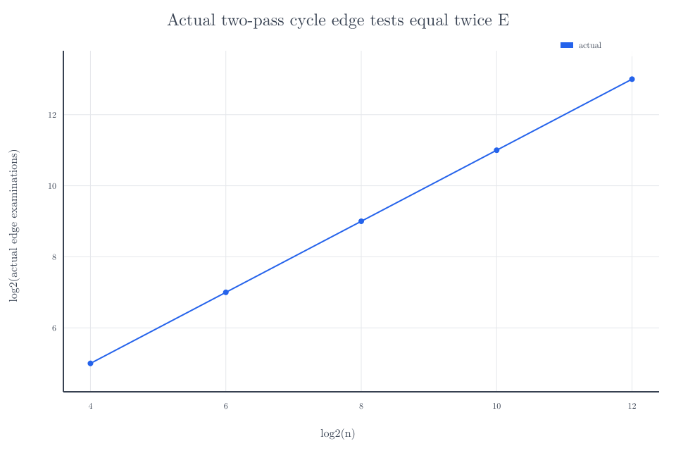

Kosaraju SCCs through actual two-pass DFS events
Abstract
A directed graph can contain many cycles, but vertices belong together only when they can reach each other in both directions. Strongly connected components partition the graph into those maximal groups and leave an acyclic condensation graph. Kosaraju finds the partition with two iterative DFS passes. We inspect actual exits and transpose discoveries, retain the original eight-vertex graph, and check the partition against complete mutual reachability rather than relying only on agreement with another SCC algorithm.
Why the second pass uses reverse finishing order
Collapse each mutually reachable group to a condensation vertex. The condensation is acyclic: a directed cycle of distinct groups would make their members mutually reachable and merge them. For a condensation edge C→D, the largest first-pass finishing time in C exceeds that in D. If DFS enters C first it can finish reachable D before C; if D was already visited it already finished. Thus the next unassigned maximum-finishing component has no incoming edge from another remaining component in the original graph. In the transpose it cannot escape to an unassigned component, while all its members remain mutually reachable. A transpose DFS therefore assigns exactly that SCC; induction handles the rest.
Roots of the first pass are ascending original vertex ids, edges follow caller order and exits append to finish_order. Transpose rows are built in original source order. The second pass uses reverse exits and assigns at discovery, before stack processing. Actual numeric labels follow this root order and topologically order cross-component edges, rather than denoting minimum vertex ids. All state is iterative; no recursion limit is required.
Three vertices: actual exits and assignments
In0→1→0 with1→2, the first two vertices form one SCC and vertex2 forms another. The diagram summarizes actual producing finish_order and labels; the table records real operations in order.
#include <dm/dm.hpp>
int main() {
std::filesystem::create_directories("build");
const auto t = dm::algorithms::kosaraju_trace(3, {{1}, {0, 2}, {}});
std::print("| actual ordinal | operation code | vertex or source | edge target, minus1 if none | actual " "component, minus1 if first pass |\n| ---: | ---: | ---: | ---: | ---: |\n");
for (std::size_t i = 0; i < t.events.size(); ++i) {
const auto &e = t.events[i];
std::print("| {} | {} | {} | {} | {} |\n", i, int(e.kind), e.u, e.v,
e.component);
}
dm::graphics::Diagram d;
d.node("first", {0, 0},
std::format("Actual first-pass exits\n{}, {}, {}", t.finish_order[0],
t.finish_order[1], t.finish_order[2])).node(
"second", {7, 0},
std::format("Actual transpose labels\n0:{}, 1:{}, 2:{}", t.component[0],
t.component[1], t.component[2])).edge("first", "second").save_svg("build/kosaraju_passes.svg");
}| actual ordinal | operation code | vertex or source | edge target, minus1 if none | actual component, minus1 if first pass |
|---|---|---|---|---|
| 0 | 0 | 0 | -1 | -1 |
| 1 | 1 | 0 | 1 | -1 |
| 2 | 0 | 1 | -1 | -1 |
| 3 | 1 | 1 | 0 | -1 |
| 4 | 1 | 1 | 2 | -1 |
| 5 | 0 | 2 | -1 | -1 |
| 6 | 2 | 2 | -1 | -1 |
| 7 | 2 | 1 | -1 | -1 |
| 8 | 2 | 0 | -1 | -1 |
| 9 | 3 | 0 | -1 | 0 |
| 10 | 4 | 0 | 1 | 0 |
| 11 | 3 | 1 | -1 | 0 |
| 12 | 4 | 1 | 0 | 0 |
| 13 | 3 | 2 | -1 | 1 |
| 14 | 4 | 2 | 1 | 1 |

Original eight-vertex graph
Retain0→1→2→0,3→4→5→3, the bridge2→3, and tail5→6→7. All vertices and directed edges below are the original example. Labels are actual output, and each displayed edge remains a directed input edge. The expected groups have sizes3,3,1,1. Comparing group membership with mutual reachability is stronger independent evidence than matching numeric labels from Tarjan, whose component ordering can differ.
#include <dm/dm.hpp>
int main() {
std::filesystem::create_directories("build");
const std::vector<std::vector<int>> a = {{1}, {2}, {0, 3}, {4}, {5}, {3, 6},
{7}, {}};
const auto t = dm::algorithms::kosaraju_trace(8, a);
std::print("| original vertex | actual SCC label | actual first-pass finish ordinal |\n| ---: | ---: | " "---: |\n");
for (int v = 0; v < 8; ++v) {
const auto it =
std::find(t.finish_order.begin(), t.finish_order.end(), v);
std::print("| {} | {} | {} |\n", v, t.component[v],
it - t.finish_order.begin());
}
const std::vector<std::array<double, 2>> pos = {{0, 4}, {5, 4}, {5, 0},
{10, 4}, {15, 4}, {15, 0},
{10, -4}, {5, -4}};
dm::graphics::Diagram d;
for (int v = 0; v < 8; ++v)
d.node(std::to_string(v), {pos[v][0], pos[v][1]},
std::format("Vertex {}\nSCC {}", v, t.component[v]));
for (int u = 0; u < 8; ++u)
for (int v : a[u])
d.edge(std::to_string(u), std::to_string(v));
d.save_svg("build/kosaraju_original.svg");
}| original vertex | actual SCC label | actual first-pass finish ordinal |
|---|---|---|
| 0 | 0 | 7 |
| 1 | 0 | 6 |
| 2 | 0 | 5 |
| 3 | 1 | 4 |
| 4 | 1 | 3 |
| 5 | 1 | 2 |
| 6 | 2 | 1 |
| 7 | 3 | 0 |

Independent mutual reachability controls
A Boolean transitive closure provides an independent small-graph oracle: u and v share an SCC exactly when reach[u][v] and reach[v][u]. The complete census below checks every directed three-vertex graph including self-loops. Parallel edges are separate entries for work, while neither loops nor duplicates change the mutual-reachability definition. An empty graph returns an empty partition.
#include <dm/dm.hpp>
int main() {
std::filesystem::create_directories("build");
std::vector<std::size_t> counts(4);
for (int mask = 0; mask < 512; ++mask) {
std::vector<std::vector<int>> a(3);
bool reach[3][3]{};
for (int u = 0; u < 3; ++u) {
reach[u][u] = true;
for (int v = 0; v < 3; ++v)
if (mask & (1 << (u * 3 + v))) {
a[u].push_back(v);
reach[u][v] = true;
}
}
for (int k = 0; k < 3; ++k)
for (int i = 0; i < 3; ++i)
for (int j = 0; j < 3; ++j)
reach[i][j] = reach[i][j] || (reach[i][k] && reach[k][j]);
const auto out = dm::algorithms::kosaraju_analyze(3, a);
for (int i = 0; i < 3; ++i)
for (int j = 0; j < 3; ++j)
if ((out.component[i] == out.component[j]) !=
(reach[i][j] && reach[j][i]))
throw std::runtime_error("mutual reachability mismatch");
++counts[out.work.second_roots];
}
std::vector<double> x, y;
std::print("| actual component count | complete three-vertex graph census |\n| ---: | ---: |\n");
for (int c = 1; c <= 3; ++c) {
std::print("| {} | {} |\n", c, counts[c]);
x.push_back(c);
y.push_back(counts[c]);
}
auto p = dm::graphics::RPlot::create();
p.bars(x, y, "graphs", {37, 99, 235}, .6).y_limits(-10, 400).title(
"All 512 directed three-vertex graphs checked").x_label(
"actual SCC count").y_label("number of graphs").save_svg(
"build/kosaraju_census.svg");
}| actual component count | complete three-vertex graph census |
|---|---|
| 1 | 144 |
| 2 | 168 |
| 3 | 200 |

Checking actual linear work
Each first-pass adjacency entry is examined once, each transpose entry once, each vertex discovered/finished once and each vertex assigned once. Therefore the event capture has3n+2E actual operations. The selected edge-test sum is2E. Transpose construction, validation, stack operations, copies and elapsed time are excluded from those counters. Including them, the algorithm still takes O(n+E) work and storage. A complete trace additionally owns the original graph and actual output/event structures.
Adding the closing edge of a directed chain merges every vertex into one SCC, but does not change the linear scan property. These are separate complete chain and cycle runs, not partial executions reused as histories.
#include <dm/dm.hpp>
int main() {
std::filesystem::create_directories("build");
std::vector<double> x, y;
std::print("| n | original edge entries | chain SCC count | cycle SCC count | actual cycle edge tests, " "both passes | expected twice E |\n| ---: | ---: | ---: | ---: | ---: | ---: |\n");
for (int n : {16, 64, 256, 1024, 4096}) {
std::vector<std::vector<int>> a(n);
for (int i = 0; i < n - 1; ++i)
a[i].push_back(i + 1);
const auto chain = dm::algorithms::kosaraju_analyze(n, a);
a.back().push_back(0);
const auto cycle = dm::algorithms::kosaraju_analyze(n, a);
const auto tests =
cycle.work.first_edge_tests + cycle.work.second_edge_tests;
std::print("| {} | {} | {} | {} | {} | {} |\n", n, n,
chain.work.second_roots, cycle.work.second_roots, tests,
2 * n);
x.push_back(std::log2(n));
y.push_back(std::log2(tests));
}
auto p = dm::graphics::RPlot::create();
p.line(x, y, "actual", {37, 99, 235}, 2).points(x, y, "", {37, 99, 235}, 4).title("Actual two-pass cycle edge tests equal twice E").x_label("log2(n)").y_label("log2(actual edge examinations)").save_svg("build/kosaraju_work.svg");
}| n | original edge entries | chain SCC count | cycle SCC count | actual cycle edge tests, both passes | expected twice E |
|---|---|---|---|---|---|
| 16 | 16 | 16 | 1 | 32 | 32 |
| 64 | 64 | 64 | 1 | 128 | 128 |
| 256 | 256 | 256 | 1 | 512 | 512 |
| 1024 | 1024 | 1024 | 1 | 2048 | 2048 |
| 4096 | 4096 | 4096 | 1 | 8192 | 8192 |

Scope and verification
The complete graph must have n nonnegative vertices, exactly n rows and every endpoint in range, checked before vertex access or copies. No global graph-size optional cap applies to scalar/count-only calls. Trace capture admits original n+E records before copying and each producing event before its operation. The default million-entry ceiling excludes transpose/order/label copies, individual fields, capacities and bytes/RAM; zero disables only that optional cap. All output structures own their values and no replay is used.
Independent transitive closure and separately evaluated operation order
checked500 directed multigraphs and45812 actual events, including full
original/transpose edge multiplicity, exits and assignments. Frozen valid-input
labels matched2000 additional graphs exactly. Native tests exhaust all4096
loop-free directed four-vertex graphs, cover the original example and test
a100000-vertex iterative chain/cycle, complete input rejection, quotas and
ownership. The ten-report shared build passed141 native CTest cases,45 directly
instrumented address/undefined-behaviour sanitizer cases,90 compiled/executed
public examples,412/412 scoped file definitions plus11/11 changed
lagged-Fibonacci engine definitions, and ten representative clangd hovers. All
four complete report programs executed and all four native figures were visually
reviewed. Receipts and repeatable checks are retained under
build/mepml-conversion/batch-184-193/.
References
M. Sharir(1981), A strong-connectivity algorithm and its applications in data flow analysis, Computers and Mathematics with Applications7(1),67–72. The two-pass algorithm is commonly named Kosaraju–Sharir; actual native iterative ordering is specified above.